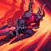
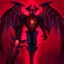
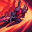
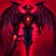

Milhares de anos atrás, o império de Shurima era uma civilização grandiosa protegida por guerreiros mortais que passavam pelo ritual da Ascensão. Este ritual, concedido pelo poder do Disco Solar, transformava humanos dignos em seres quase divinos: os Ascendentes.
Aatrox foi um desses escolhidos. Ele era um guerreiro talentoso e destemido que ganhou poderes imensuráveis. Após o ritual, seu corpo se tornou imortal, revestido de uma luz celestial. Aatrox não era apenas forte fisicamente; ele também foi visto como um líder estratégico e um símbolo de esperança.
Corrupção e Transformação em Darkin
A ascensão de Aatrox coincidiu com a ameaça do Vazio, uma força destruidora que corrompia tudo em seu caminho. Aatrox e outros Ascendentes, como Nasus e Renekton, lideraram as forças de Shurima contra essa ameaça.
Eles combateram o Vazio por séculos, com Aatrox se destacando como um herói incansável, defendendo o mundo contra essa corrupção alienígena. Ele acreditava firmemente no seu propósito e no ideal de proteger a criação.
O Fim da Guerra e a Queda dos Ascendentes
Com a vitória sobre o Vazio, os Ascendentes se viram sem propósito. O poder divino que outrora era usado para proteger começou a corrompê-los. Sem um inimigo comum, passaram a lutar entre si, tornando-se seres cada vez mais arrogantes, violentos e implacáveis.
Aatrox, que já havia perdido inúmeros companheiros na guerra, começou a questionar sua própria existência. Sem propósito e tomado por um sentimento de vazio, ele foi um dos primeiros a sucumbir à corrupção, transformando-se em algo sombrio e impiedoso. Os Ascendentes corrompidos se tornaram conhecidos como os Darkin, e Aatrox emergiu como um dos mais poderosos entre eles.
Motivações e Objetivos
Aatrox tem um único objetivo: libertar-se completamente de sua prisão na espada. Ele acredita que a única maneira de alcançar essa liberdade é destruindo tudo e todos, incluindo ele próprio e o universo. Sua fúria é direcionada principalmente aos seres celestiais, responsáveis por sua prisão, mas ele não distingue amigos de inimigos, pois vê toda a criação como algo que precisa ser aniquilado.
A Busca por Destruição e Liberdade
Agora, Aatrox vaga por Runeterra, manipulando corpos e buscando a destruição completa. Ele não luta apenas por vingança, mas como uma forma de protesto contra sua própria existência. A cada batalha, Aatrox busca desesperadamente se libertar, mesmo que isso signifique a morte de milhões.
Ele acredita que o fim do mundo é o único caminho para escapar de sua prisão eterna. Sua luta não é apenas física, mas também filosófica, e ele frequentemente expressa pensamentos sombrios sobre a vida, a morte e o significado da existência.
A Prisão na Espada
Temendo a destruição que os Darkin causavam, os magos de Shurima realizaram um poderoso ritual para aprisionar suas essências em armas. Aatrox foi selado dentro de sua espada, uma arma capaz de corromper e controlar aqueles que a empunhassem.
Embora preso, Aatrox ainda mantinha parte de sua influência: ele podia manipular os corpos dos guerreiros que tocavam sua espada, lentamente moldando-os à sua imagem. No entanto, essa era uma existência miserável, pois cada corpo que ele possuía eventualmente se deteriorava, obrigando-o a repetir o ciclo.
O Ódio Pela Eternidade: O Declínio de Aatrox
Séculos se passaram, e Aatrox se tornou uma entidade amarga e vingativa. Preso em sua própria arma, ele viu o mundo mudar enquanto continuava escravizado à sua forma atual.
Seu ódio não era apenas dirigido aos mortais, mas também aos próprios deuses e ao conceito de vida. Aatrox passou a ver a existência como uma maldição e traçou um objetivo claro: destruir toda a criação. Ele acredita que somente aniquilando tudo – incluindo ele mesmo – poderá alcançar a liberdade definitiva.
Personalidade e Filosofia
Aatrox é amargurado, cínico e movido por um profundo sentimento de perda e desesperança. Ele acredita que sua existência é uma maldição e que a destruição é a única forma de redenção. Sua filosofia é marcada pelo desprezo à vida e pela convicção de que o universo está condenado. Ele se considera uma vítima e, ao mesmo tempo, um agente de sua própria vingança.
Aatrox é um símbolo da luta contra o destino, um ser que, apesar de imortal, busca o fim de toda existência para escapar de sua eterna prisão.
Habilidades
Aatrox, o Darkin Blade, é um campeão de League of Legends que atua como um lutador (top laner) focado em dano sustentado e controle de grupo. Suas habilidades são baseadas no uso de sua espada para causar dano massivo em área e se curar durante o combate:

 


